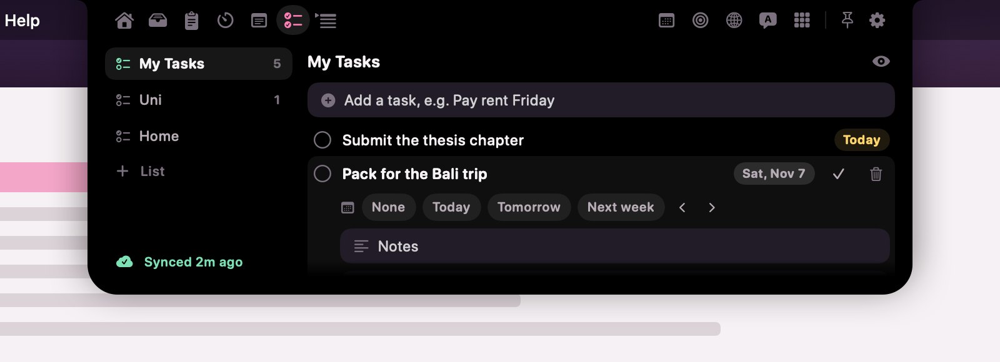

Isinya
Semua alat cukup sekali arahkan kursor, lalu menutup lagi saat kamu pindah.
- Musik
- Tray file & AirDrop
- Riwayat clipboard
- Pomodoro & timer
- Kalender & pengingat
- To-do dengan Google Tasks
- Catatan
- Teleprompter
- Baterai & sistem
- Cuaca
- Terjemah & AI
- Cermin
Google Tasks di notch-mu
Tab To-do menyimpan daftar, subtugas, dan tenggat. Kalau kamu menyambungkan Google Tasks di Pengaturan › To-do, Saku menyinkronkannya dua arah dengan akun Google-mu: tugas yang kamu tambah di HP muncul di notch, dan tugas yang kamu centang di notch juga selesai di HP.
Untuk itu, Saku minta satu izin ke Google: membuat, mengedit, mengatur, dan menghapus tugasmu. Saku memakainya hanya untuk sinkron ini. Salinan tugasmu tetap di Mac supaya tab bisa dibuka saat offline, token masuknya tersimpan di Keychain macOS, dan tidak ada yang dikirim ke pembuat Saku atau siapa pun. Detailnya ada di kebijakan privasi.

Datamu tetap di Mac-mu
Tanpa akun, tanpa pelacakan
Saku tidak punya pendaftaran, analitik, atau server. Pembuatnya tidak pernah melihat datamu.
Tersimpan di Mac
Catatan, clipboard, to-do, dan pengaturan ada di folder Application Support di Mac-mu. Kunci API dan token ada di Keychain.
Online hanya saat kamu minta
Cuaca, sampul album, tab Web, Google Tasks, serta terjemah atau AI berbasis cloud langsung terhubung ke layanan pilihanmu.